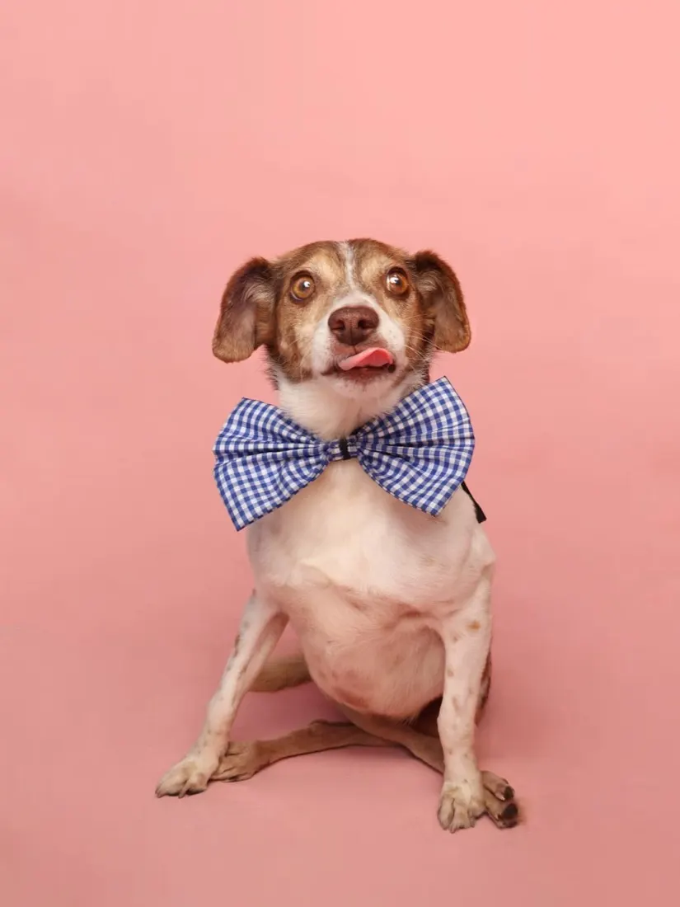
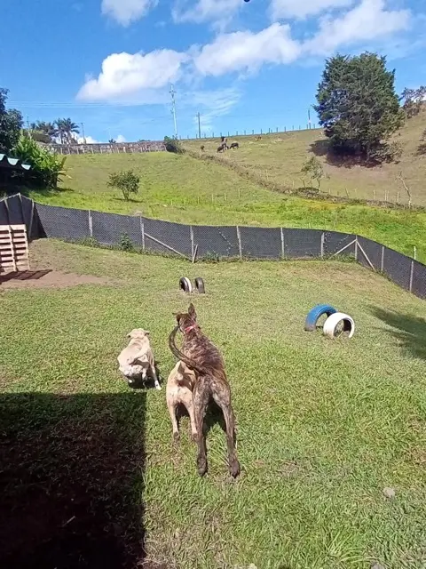
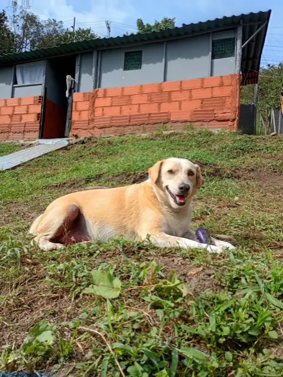
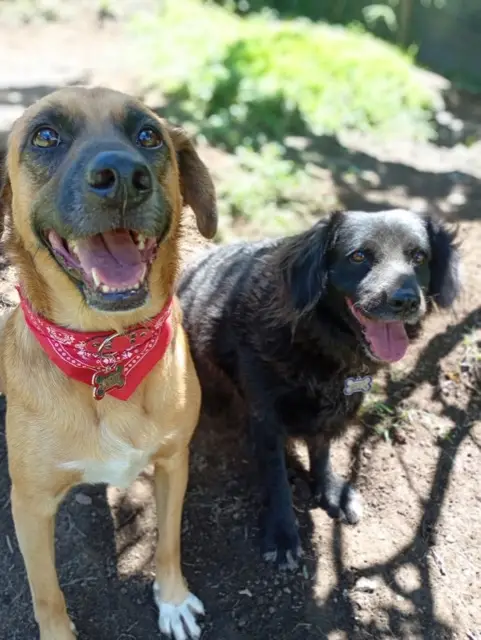

Misión
Dar hogar, alimento, atención veterinaria y bienestar a perros que llegaron tras el abandono, para que puedan vivir con dignidad y tranquilidad.
Canadog Santuario · Antioquia
Canadog Santuario es el hogar de una manada de perritos que llegaron tras el abandono, el dolor o la indiferencia. Aquí reciben alimento, cuidados veterinarios, bienestar y, sobre todo, mucho amor.
Una gran manadaque sigue adelante gracias a ti

Perritos en la manada
Esterilizaciones
Aliados y padrinos
Sin ánimo de lucro



Quiénes somos
Canadog Santuario es el lugar donde muchas historias que comenzaron con abandono, dolor o indiferencia encuentran una nueva oportunidad.
Pero Canadog es mucho más que un espacio físico. Es una manada, una responsabilidad y un compromiso con cada uno de los perros que llegó buscando ayuda.
Aquí cada día significa alimentación, medicamentos, tratamientos veterinarios, vacunas, esterilizaciones, limpieza, bienestar y, sobre todo, mucho amor. Son necesidades permanentes que no desaparecen cuando termina una campaña o una publicación.
Dar hogar, alimento, atención veterinaria y bienestar a perros que llegaron tras el abandono, para que puedan vivir con dignidad y tranquilidad.
Construir una comunidad de personas, emprendimientos y empresas que caminen con Canadog y hagan sostenible el cuidado de toda la manada.
Amor, compromiso y responsabilidad. Creemos que ayudar también es una forma de transformar vidas y que ningún animal debe quedarse sin una oportunidad.
Nuestra fundadora
Soy Ana Cristina, enfermera y terapeuta respiratoria de profesión, pero también una mujer profundamente apasionada por servir, cuidar y dar segundas oportunidades. Lo que comenzó ayudando a algunos perritos que necesitaban una oportunidad fue creciendo poco a poco, hasta convertirse en la misión que transformó mi vida: Canadog Santuario.
“Canadog no nació de tenerlo todo resuelto. Nació del amor, de la necesidad de ayudar y de la convicción de que ningún animal debería dejar de tener una oportunidad porque su historia sea difícil.”
Muchos de mis amorcitos llegaron después de historias de abandono, promesas que nunca se cumplieron o situaciones en las que no había nadie más que respondiera. Hoy soy yo quien está detrás de esta manada: busco los recursos, consigo tratamientos, limpio, alimento, acompaño y abrazo. Detrás de cada perrito que ven hay una historia, una lucha y un corazón que decidió no mirar hacia otro lado.
Nuestra manada
Detrás de cada perrito hay una historia de abandono que se convirtió en una nueva oportunidad. Esta es la manada que sigue adelante porque muchas personas decidieron no ser indiferentes.
Aliados de la manada
No buscamos solamente ayudas: buscamos aliados que crean que ayudar también es una forma de transformar vidas. Cada aporte, producto, servicio, compra o difusión hace parte de una misma historia.
Emprendimientos y empresas pueden unirse con productos, servicios o campañas. Una alianza puede ser el alimento o el tratamiento que un perrito necesita con urgencia.
Quiero ser aliadoTu aporte en dinero, alimento, medicamentos o implementos se convierte en vacunas, esterilizaciones y mejores espacios para toda la manada.
Quiero donarAcompaña a un perrito de la manada con un aporte periódico y ayúdale a vivir con dignidad y tranquilidad.
Quiero apadrinarComparte nuestras historias y publicaciones. Cada persona que se entera de Canadog puede ser el próximo aliado de la manada.
Quiero difundirAlimentación, medicamentos, vacunas y esterilizaciones son necesidades de todos los días. Tu ayuda hace que alcance para todos. 💚🐾
Contacto
Si eres persona, emprendimiento o empresa y quieres hacer parte de este propósito, escríbenos. Juntos podemos garantizar que cada perrito de la manada tenga lo que necesita.